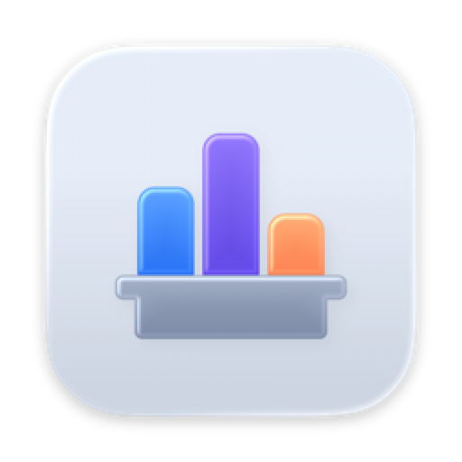

Statuette
A system monitor for your menu bar.
What it shows
Processor load, memory pressure, free disk space, network throughput and battery, right in the menu bar. Click any of them for a panel with the detail behind the number: ring gauges, the last two minutes as sparklines, a heat map with one cell per core, and memory broken into app, wired and compressed.
Your menu bar, your way
- Choose which readings appear, and in which order.
- One entry per reading with its own panel, or one combined entry that opens everything.
- Icons with values, or short text labels. Digits are padded, so nothing jitters.
- Four colour themes, three text sizes, and an animation switch that follows Reduce Motion.
Alerts
Give any reading a warning threshold and a critical one. Cross them and the value turns orange, then red, in the menu bar and on its card. Everything is off until you switch it on.
Privacy
Statuette only reads. It has no account, makes no network connection of any kind and collects nothing. The privacy policy says the same at more length.
Questions, or something not working? See Support.
More apps from the same maker
Small apps, each made to do one thing well. No accounts, no ads, and none of them tracks you.
 TocketteA timer, one drag from the menu bar.Mac
TocketteA timer, one drag from the menu bar.Mac ZonetteEvery time zone you care about, one click away.MaciPhone & iPadAndroid
ZonetteEvery time zone you care about, one click away.MaciPhone & iPadAndroid LunetteThe Moon and the Sun, at a glance.MaciPhone & iPadAndroid
LunetteThe Moon and the Sun, at a glance.MaciPhone & iPadAndroid LunaretteThe lunar calendar, in four traditions.MaciPhone & iPadAndroid
LunaretteThe lunar calendar, in four traditions.MaciPhone & iPadAndroid PausetteGentle breaks for your eyes and your back.Mac
PausetteGentle breaks for your eyes and your back.Mac PoisetteSit tall, reminded by the AirPods you wear.MaciPhone & iPad
PoisetteSit tall, reminded by the AirPods you wear.MaciPhone & iPad HushetteCalm ambient sound that never loops.MaciPhone & iPadAndroid
HushetteCalm ambient sound that never loops.MaciPhone & iPadAndroid TapsodyMechanical keyboard sounds as you type.Mac
TapsodyMechanical keyboard sounds as you type.Mac ThrumlineYour heart rate, live in the menu bar.Mac
ThrumlineYour heart rate, live in the menu bar.Mac NightjarKeep your Mac awake. Honestly.Mac
NightjarKeep your Mac awake. Honestly.Mac UmbretteDim everything but the window you work in.Mac
UmbretteDim everything but the window you work in.Mac PrompetteA teleprompter right under your camera.MaciPhone & iPadAndroid
PrompetteA teleprompter right under your camera.MaciPhone & iPadAndroid
TalletteA paper tape for your sums.MaciPhone & iPadAndroid ProbetteEverything technical about a media file, in words.MaciPhone & iPadAndroid
ProbetteEverything technical about a media file, in words.MaciPhone & iPadAndroid BindetteTurn audio files into one proper audiobook.MaciPhone & iPadAndroid
BindetteTurn audio files into one proper audiobook.MaciPhone & iPadAndroid LettretteOpen winmail.dat and .msg files, as they were sent.MaciPhone & iPad
LettretteOpen winmail.dat and .msg files, as they were sent.MaciPhone & iPad Nhanh TayPut four answers in order. Fast.iPhone & iPadAndroid
Nhanh TayPut four answers in order. Fast.iPhone & iPadAndroid